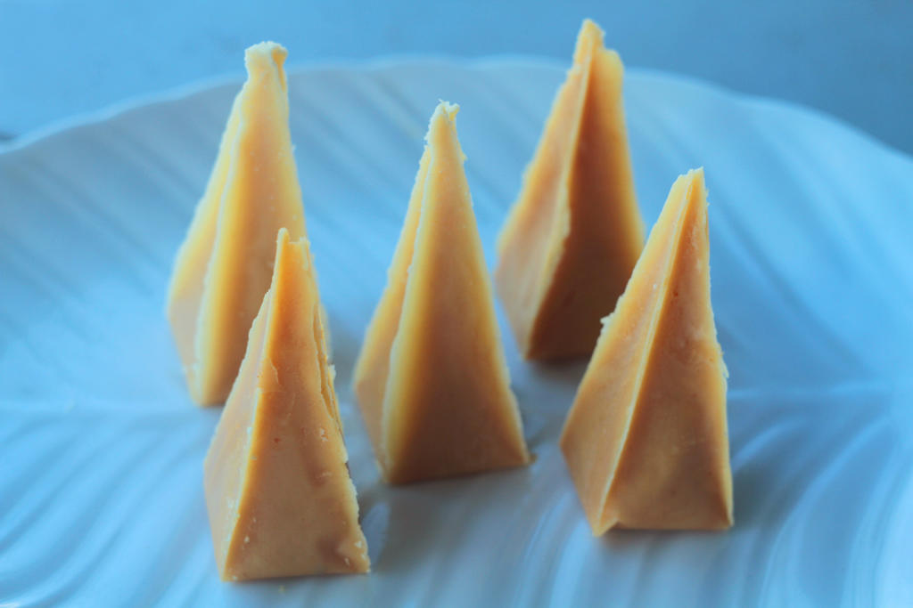

By Manamparan, Adriel Lenard of Potassium
Submitted on August 29, 2025
My Favorite Recipe
Intro text goes here about why you love this recipe.
Ingredients:
- 7 pieces egg yolks
- 1 can condensed milk (14 oz.)
- 3 tablespoons butter
- 5 tablespoons chopped walnuts or peanuts
Instructions
Combine egg yolks and condensed milk. Mix well.
Add chopped walnuts. Whisk until well blended.
Melt butter in a cooking pot or pan. Pour the egg yolk mistuxe into the pan.
Continue to cook until the consistency becomes very thick to the point that it can easily form a shape when molded.
Transfer the mixture to a bowl. Let it cool down.
Cut the cellophane into 3x3 inch pieces. Scoop 1 tablespoons of mixture and place at the middle of the cellophane. Wrap the yema while molding to form a pyramid shape piece (note: watch the video for details). Continue to wrap the yema until all the mixture are consumed.
Serve . Share and enjoy.
Picture
